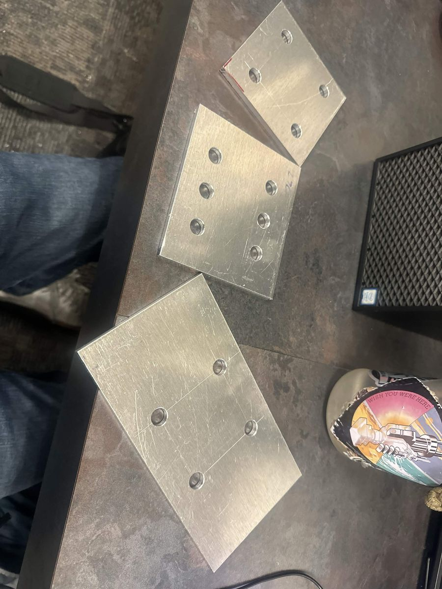
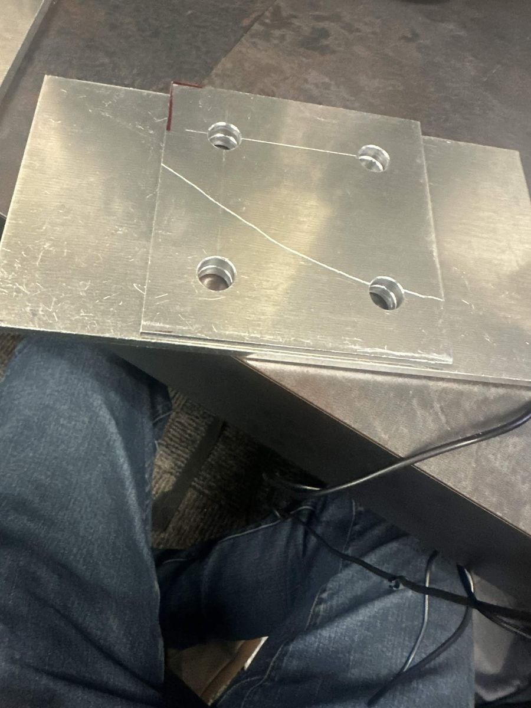
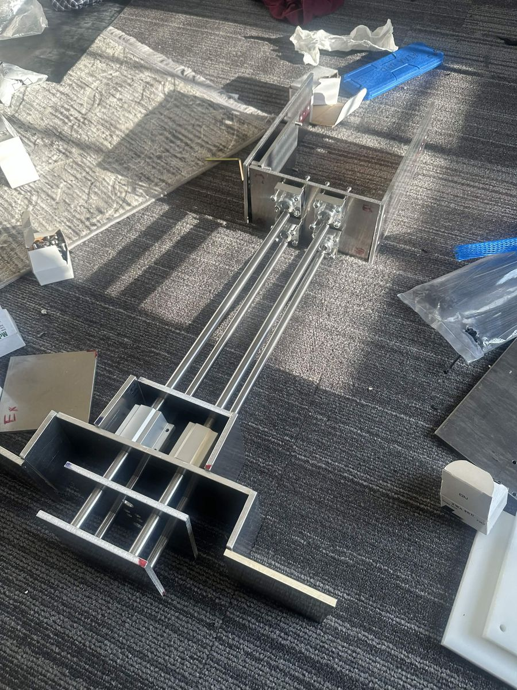

Rebuilding the Excavator
Comet Aerobotics is AIAA UTD's team for NASA's Lunabotics Challenge, where university teams design and build a robot (modeled after a lunar rover) that can navigate a simulated lunar surface, excavate regolith simulant, and use it to build berm structures, all within strict size and weight limits. I joined Comet Aerobotics because it sounded cool, and it ended up being one of the most enriching experiences I've had at university.
My first semester, I helped model the excavator's components in SolidWorks and produced the engineering drawings that were sent out to be machined. At the end of that same semester, I was offered the position of CAD Specialist.
As CAD Specialist, I rebuilt the entire excavator assembly from the ground up: I remodeled the parts, rebuilt the full assembly in SolidWorks, and made a new set of engineering drawings. Then, I took some of those drawings to the shop and machined the parts myself, cutting the plates on a bandsaw, drilling the hole patterns on a drill press, and finishing and polishing each part by hand.


Fig. 1 · Some plates I machined myself
The hardest design problem was the belt. The excavator digs with a belt of buckets running around a set of wheels, and we needed a way to take that belt on and off without tearing the assembly apart. We solved it with a design a teammate nicknamed the "Pancake Tensioner": two plates separated by spacers and joined with screws. Loosening or tightening those screws moves the bottom wheels up or down, which slackens or tensions the entire belt. To swap the belt, you loosen a few screws instead of disassembling the entire excavator.

For media purposes, I also made an exploded animation of the excavator CAD. It shows how the parts of the system fit together and how the excavator works.
By the end of my time on the team, I had taken parts all the way from a SolidWorks model to an engineering drawing to a finished piece of metal. It was my first foray into metal fabrication, and this experience eventually helped me get a job in a workshop, where my role was to manage the drill presses and bandsaws and make sure people used them safely.
I also received the team's "Duct Tape Saves Lives" award. The director at the time said she gave it to me for my attitude and tenacity, and because, in her words, I was a really resourceful guy.